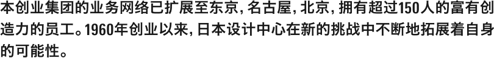

当前设计行业的情况，与50年前相比发生了很大变化。在这50年间，NDC也曾被变化的漩涡所迷惑，走出迷惑的原动力来源于员工及其团队的表现，他们不断用新的灵感创新设计工作。设计不仅仅是表现，也不仅仅是想象，而是大家在深思熟虑后心灵产生共鸣才得以完成。今天，站在现阶段回顾NDC的过往，不是怀旧，而是要去思考日本设计行业的明天与未来。NDC在今后50年中，将与设计行业的同仁一起迎接设计的新天地。谨以此文作为前进征途中的一个路标。
总经理 铃木清文
| 商号 | 株式会社日本设计中心 Nippon Design Center, Inc. | |
|---|---|---|
| 成立 | 1960年12月26日 | |
| 注册资金 | 4,500万日元 | |
| 总部所在地 | 东京都中央区银座4丁目9番13号 | |
| 员工人数 | 226人 | |
| 全年销售额 | 422,602万日元（2013 6月30日决算） | |
| 出资公司 | 朝日啤酒株式会社 JFE钢铁株式会社 NIPPON STEEL & SUMITOMO METAL CORPORATION 大发工业株式会社 株式会社东芝
凸版印刷株式会社 丰田汽车株式会社 株式会社尼康 野村土地建物株式会社 野村控股株式会社 |
|
| 董事 | 总经理 | 铃木 清文 |
| 代表取缔役 | 寺谷 敬二郎
原 研哉 |
|
| 专务董事 | 川俣 忠久 | |
| 董事 | 佐佐木 丰
西 直树 久保 亨 大关 富士夫 儿玉 圭文 一丸 阳一郎（丰田汽车株式会社 审计监察官） 足立 直树（凸版印刷株式会社 代表取缔役会长） 冈本 恭幸（株式会社尼康 常务执行董事） 荻田 伍（朝日啤酒株式会社 代表取缔役会长兼CEO） |
|
| 监查员 | 铃木 稻博（株式会社日本调查中心 总经理） | |
| 最高顾问 | 永井一正 | |
| 主要客户 | 旭化成株式会社 朝日啤酒株式会社 JFE钢铁株式会社 NIPPON STEEL & SUMITOMO METAL CORPORATION
大发工业株式会社 株式会社东芝 凸版印刷株式会社 丰田汽车株式会社 株式会社尼康 野村控股株式会社 朝日新闻社 AGF株式会社 株式会社伊势丹 株式会社讲谈社 新国立剧场运营财团 新日本建筑家协会 精工表株式会社 总务府广报室 株式会社大成建设 株式会社竹尾 千叶市 泰尔茂株式会社 东京电力株式会社 富士县 尼卡威士忌株式会社 莲娜丽姿珍贵株式会社 株式会社日本经济新闻社 日本烟草产业株式会社 日本放送协会 株式会社长谷工公司 东日本旅客铁道株式会社 株式会社御木本 森大厦株式会社 株式会社良品计划 株式会社华歌尔 |
|
| 集团公司 | 株式会社Studio VIG 株式会社NDC Asterisk 株式会社X-PORT 株式会社NDC平面设计
北京和创图文制作有限公司 北京大思広告有限公司 |
|
东京总部
邮政编码 104-0061 东京都中央区银座4-9-13 银座4丁目塔（前台13F）
Tel. 03-6264-0300（总机）
- 最近车站
-
JR山手线・京浜东北线 有乐町站
银座线 银座站
日比谷・浅草线 东银座站 - 地图
- Google Map
名古屋分公司
邮政编码 450-0002 爱知县名古屋市中村区名站4-4-10 名古屋Crosscourt Tower15层
Tel. 052-533-2645（总机）
- 最近车站
- JR・名铁・近铁・地铁 名古屋站
- 地图
- Google Map
东云工作室
邮政编码 135-0062 东京都江东区东云2-5-7 日进运输大厦2F
Tel. 03-3527-7690（总机）
- 最近车站
- 临海线 东云站
- 地图
- Google Map
北京工作室
中国北京市内
- 1959年
-
12月 作为促进日本广告设计的发展及质量水平的创造集团，召集了日本最高水准的设计人员、广告文案创意人、摄影师。
由8家公司（朝日啤酒、旭化成、新日本制铁、东芝、丰田汽车、尼康、日本钢管、野村证券）出资成立。
山本为三郎（董事长）、龟仓雄策、原弘、山城隆一、矶部一充、阿部章弘、阿部龙五郎、加藤诚之、
田中四郎、木村孙八郎、白滨浩、铃木松夫
- 1960年
-
3月 在中央区银座文成大厦设立临时办事处
6月 办事处搬迁至中央区银座明裕国际会馆 - 1961年
- 电影部门分离，单独成立日本产业电影中心
- 1962年
-
在荷兰阿姆斯特丹举办NDC展
瑞士设计专刊“平面设计”刊载了NDC特别报道 - 1963年
- 在纽约及伦敦两城市举办NDC展
- 1964年
- 协助东京奥运会各部门设计工作，收到来自财团法人奥运会东京大会组织委员会的感谢函
- 1965年
-
在德国法兰克福举办NDC展
制作部改为3部门体制，新设立插图部、写真部 - 1966年
-
刊发创立5周年纪念作品集 神谷正太郎就任代表取缔役会长
永井一正设计札幌冬季奥运会象征标志 - 1967年
- 办事处搬迁至中央区银座中央大和大厦
- 1968年
- 在美国西雅图市及捷克布拉格举办NDC展
- 1969年
- 4月 原弘就任总经理
- 1971年
-
原弘获得紫绶褒章
刊发创立10周年纪念作品集 - 1973年
- 永井一正设计冲绳海洋博览会象征标志
- 1975年
-
1月 永井一正就任总经理
5月 铃木松夫就任董事长 - 1978年
- 设置TV制作室及TV制作室运营委员会
- 1979年
- 瑞士设计专刊《平面设计》刊出NDC特集报道
- 1980年
- 新设立国际局
- 1981年
-
刊发创立20周年纪念作品集
在东京王子大饭店举办“日本设计中心OB联欢会”
新设立永井造形研究所及广告战略研究所
与美国广告代理Dancer Fitzgerald Sample公司取得业务合作 - 1982年
- 在第10届布尔诺国际平面设计展上，日本设计中心获得批评家奖
- 1985年
- 在东京王子大饭店举行“永井一正先生的出版庆祝会”
- 1986年
-
新设立综合平面设计研究室
9月 田中博就任总经理
开始由日本设计中心、日本调查中心、日本产业电影中心3家公司构成的共同事业体制 - 1987年
- 新设立CI设计研究所及整套方案设计研究室
- 1988年
-
新设立影像战略企划室
法人代表永井一正获得第38届艺术选奖文部大臣奖 - 1989年
- 法人代表永井一正获得紫绶褒章
- 1990年
-
在中央美术馆（东京银座）举办作品展纪念创立30周年
刊发创立30周年作品集《日本设计中心三十年》
在纽约ADC会馆举办NDC作品展 - 1992年
- 新设立原设计研究室（现在的原设计研究所）
- 1993年
- 新设立佐佐木设计战略研究室
- 1994年
- 设立株式会社NDC平面设计
- 1995年
- 改编组织机构，成立“管理本部”、“制作本部”、“制作研究本部”的3部体制，将一般制作部门及专业部门和研究开发部门分离
- 1996年
- 铃木清文就任总经理
- 1997年
- 开设名古屋分公司
- 1998年
- 原研哉设计长野冬季奥运会开闭幕式程序
- 1999年
-
永井一正获得勋四等旭日小绶章
太田CI设计研究室改编为太田法人品牌研究所
- 2002年
- 「RE-DESIGN日常的21世纪」展在英国、丹麦、中国、加拿大巡展
- 2003年
- 赞助名古屋世界平面设计会议，协助其运营事务
- 2004年
- 开设Web设计研究所、CG开发室、制作室
- 2005年
- 在中国北京设立北京和创图文制作有限公司，NDC工作室开业
- 2006年
-
在东京东云开设NDC工作室，强化摄影影像制作事业
新设立小矶设计研究室 - 2008年
- 在名古屋市设立作为CGI部门的办事机构的NDC工作室
- 2010年
-
7月 刊发“设计的多理念日本设计中心50年” 纪念创立50周年
新设创作本部。
在中国北京设立北京大思广告有限公司，开展设计业务。